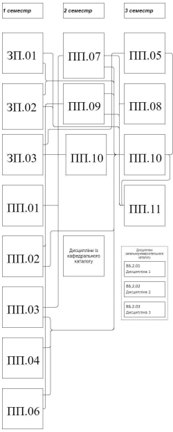

Рівень вищої освіти: другий (магістерський)
Галузь знань: F - Інформаційні технології
Спеціальність: F2 - Інженерія програмного забезпечення
Виконав: студент групи КН-25-1 Обельницький Богдан Михайлович
Метою ОП є забезпечення підготовки висококваліфікованих фахівців в галузі інформаційних технологій зі спеціальності 121 «Інженерія програмного забезпечення», здатних формулювати і розв’язувати складні науково-дослідні та прикладні проблеми в області теоретичних аспектів інформаційних та програмних технологій, побудови новітніх формальних моделей та методів, розробки, впровадження та супроводу програмного забезпечення та сервісів, що передбачає проведення досліджень нафтогазової предметної області та впровадження в ній інноваційних методик, методологій та засобів, орієнтованих на знання, в контекстах технології цифрових родовищ.
| Код | Компоненти освітньої програми | Кількість кредитів | Форма підсумкового контролю |
|---|---|---|---|
| Обов’язкова частина | |||
| Цикл 1. Дисципліни загальної підготовки | |||
| ЗП.01 | Ділова комунікація та професійна термінологія іноземною мовою | 3 | залік |
| ЗП.02 | Методологія наукових досліджень | 3 | залік |
| ЗП.03 | Філософські проблеми наукового пізнання | 3 | залік |
| Всього в циклі 1 | 9 | ||
| Цикл 2. Дисципліни професійної підготовки | |||
| ПП.01 | Новітні концепції архітектури програмного забезпечення | 4 | екзамен |
| ПП.02 | Хмарні обчислення та технології | 4 | залік |
| ПП.03 | Теоретичні та прикладні аспекти створення та функціонування програмного забезпечення | 4 | залік |
| ПП.04 | Науково-дослідницький практикум роботи з Big Data | 3 | залік |
| ПП.05 | Семантична концептуалізація процесів моделювання та розробки | 4 | залік |
| ПП.06 | Засоби реалізації інтелектуальних бізнес-моделей | 5 | залік, КР |
| ПП.07 | Інновації та основи штучного інтелекту | 3 | залік |
| ПП.08 | Стандартизація, сертифікація та верифікація вимог та якості | 5 | екзамен |
| ПП.11 | Переддипломна практика | 10.5 | залік |
| ПП.12 | Магістерська робота | 10.5 | публічний захист |
| Всього в циклі 2 | 57 | ||
| Загальний обсяг обов’язкової частини | 66 | ||
| Вибіркова частина | |||
| Цикл 1. Дисципліни із кафедрального/інститутського каталогу | |||
| ВБ.01 | Дисципліна 1 | 5 | залік |
| ВБ.02 | Дисципліна 2 | 5 | залік |
| ВБ.03 | Дисципліна 3 | 5 | залік |
| Всього в блоці 1 | 15 | ||
| Цикл 2. Дисципліни із загальноуніверситетського каталогу | |||
| ВБ.21 | Дисципліна 1 | 3 | залік |
| ВБ.22 | Дисципліна 2 | 3 | залік |
| ВБ.23 | Дисципліна 3 | 3 | залік |
| Всього в циклі 2 | 9 | ||
| Загальний обсяг вибіркової частини | 24 | ||
| ЗАГАЛЬНИЙ ОБСЯГ ОСВІТНЬОЇ ПРОГРАМИ | 90 | ||
